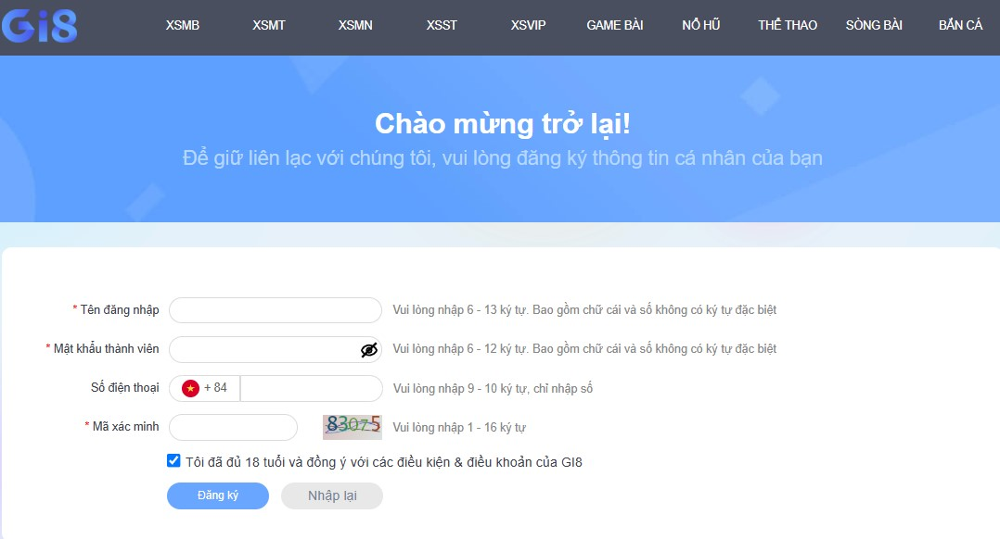

Đăng ký GI8 là bước đầu tiên giúp người chơi cá cược có cơ hội tham gia vào một trong những sân chơi uy tín nhất hiện nay. Với quy trình đơn giản và nhanh chóng, người dùng sẽ sở hữu tài khoản cá nhân để khám phá kho game đa dạng và nhận được những ưu đãi hấp dẫn. Hãy cùng tìm hiểu chi tiết cách thực hiện qua bài viết dưới đây.
Hướng dẫn tân binh đăng ký tài khoản GI8
Nhà cái GI8 được biết đến như một điểm đến lý tưởng với các sản phẩm cá cược chất lượng như xổ số, game bài, thể thao, nổ hũ, bắn cá và sòng bài. Với nền tảng công nghệ hiện đại, GI8 còn hỗ trợ người chơi tạo tài khoản nhanh chóng qua ứng dụng di động và website chính. Dưới đây là chi tiết từng phương thức:
Đăng ký tài khoản GI8 qua ứng dụng di động
Với sự phát triển mạnh mẽ của công nghệ, GI8 đã ra mắt ứng dụng dành riêng cho thiết bị di động, hỗ trợ hai hệ điều hành phổ biến là Android và iOS. Người chơi chỉ cần tải ứng dụng từ trang chủ, thực hiện đăng ký và tham gia cá cược mọi lúc, mọi nơi. Cách đăng ký tài khoản trên di động bao gồm:
- Mở ứng dụng GI8 đã tải về và nhấn vào nút “Đăng ký” trên màn hình chính.
- Điền thông tin cá nhân, bao gồm tên đăng nhập, mật khẩu, số điện thoại và mã xác minh.
- Xác nhận độ tuổi (từ 18 trở lên) và đồng ý với các điều khoản của nhà cái.
- Nhấn nút “Đăng ký” để hoàn tất.
Sau khi hoàn tất, tài khoản sẽ được xác nhận trong vài giây, và người chơi có thể truy cập ngay vào kho game mà không cần đăng nhập lại.
Đăng ký tài khoản GI8 trên website chính
Nếu không muốn sử dụng ứng dụng, người chơi có thể đăng ký trực tiếp trên website chính của GI8. Phương pháp này mang lại sự tiện lợi, nhanh chóng và phù hợp cho những ai thường xuyên sử dụng máy tính. Các bước thực hiện gồm:
- Truy cập vào website chính thức của GI8 và chọn nút “Tham gia” trên giao diện chính.
- Nhấp vào mục “Đăng ký” để mở bảng thông tin.
- Điền đầy đủ dữ liệu cá nhân như tên tài khoản, mật khẩu, số điện thoại và mã xác minh.
- Xác nhận điều khoản sử dụng và nhấn “Đăng ký” để hoàn tất.
Hệ thống sẽ tự động xử lý và kích hoạt tài khoản chỉ trong vòng một phút, giúp người chơi có thể tham gia ngay các trò chơi yêu thích.
Những lưu ý quan trọng khi đăng ký GI8
Để đảm bảo việc đăng ký diễn ra suôn sẻ, người chơi cần chú ý đến các yêu cầu và quy định của nhà cái:
- Độ tuổi tối thiểu: Người chơi phải đủ 18 tuổi trở lên.
- Định dạng tài khoản: Tên tài khoản và mật khẩu cần từ 6 đến 12 ký tự, bao gồm chữ và số, không sử dụng ký tự đặc biệt.
- Quy định tài khoản: Mỗi người chỉ được sở hữu một tài khoản duy nhất tại GI8. Nếu phát hiện trường hợp trùng lặp, hệ thống sẽ khóa tất cả tài khoản liên quan.
- Thông tin ngân hàng: Tên tài khoản ngân hàng phải trùng khớp với thông tin đăng ký để đảm bảo an toàn trong các giao dịch nạp và rút tiền.
- Lưu trữ thông tin: Sử dụng tính năng lưu mật khẩu trên thiết bị để tiết kiệm thời gian đăng nhập.
Giải đáp thắc mắc về việc đăng ký tài khoản GI8
Một số câu hỏi thường gặp từ người chơi mới khi đăng ký GI8 đã được giải đáp như sau:
Tại sao không đăng ký thành công?
Lỗi có thể do trùng tên tài khoản, đường truyền mạng kém hoặc địa chỉ IP bị chặn. Hãy thử sử dụng tên đăng nhập mới hoặc liên hệ với đội ngũ hỗ trợ của GI8 để được hướng dẫn.
Thời gian xác nhận tài khoản là bao lâu?
Quá trình xác nhận diễn ra chưa đầy một phút sau khi người chơi gửi thông tin đăng ký.
Có cần tạo tài khoản riêng cho di động không?
Không cần. Tài khoản của người chơi sẽ được đồng bộ trên cả ứng dụng và website, chỉ cần đăng ký một lần là có thể sử dụng ở mọi nền tảng.
Ưu đãi hấp dẫn dành cho tân binh tại GI8
Để khuyến khích người chơi mới, GI8 mang đến hàng loạt chương trình ưu đãi cực kỳ hấp dẫn như:
- Tặng 50.000 VNĐ khi tải ứng dụng và tham gia chơi lô đề.
- Thưởng 38.000 VNĐ khi nạp tiền lần đầu vào game xổ số.
- Tặng thưởng 688.000 VNĐ khi nạp lần đầu tại game bài.
- Khuyến mãi nạp tiền lần 2, lần 3 cho các sản phẩm thể thao.
Với các hướng dẫn chi tiết và quy trình đăng ký đơn giản, việc tạo tài khoản tại GI8 chưa bao giờ dễ dàng hơn. Đây là cổng cược uy tín với kho trò chơi phong phú và nhiều chương trình ưu đãi hấp dẫn. Hãy nhanh tay đăng ký ngay hôm nay để không bỏ lỡ cơ hội trải nghiệm và nhận thưởng lớn tại GI8.